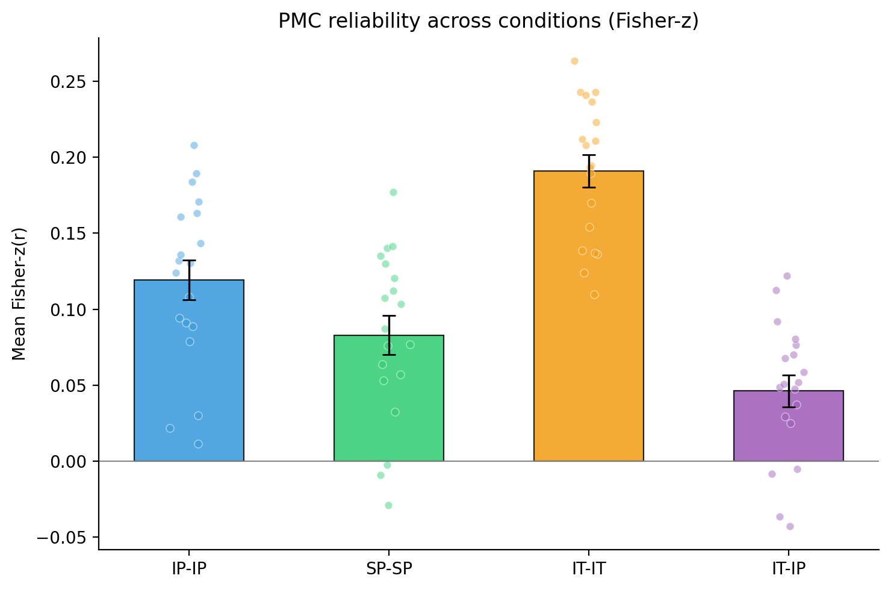

We tested whether the multivoxel pattern in posterior medial cortex (PMC) at each interruption epoch is shared across participants. Inter-subject pattern correlation (ISPC) was measured in a 15-second window spanning the ten TRs that began 7.5 s after interruption onset (the first five post-onset TRs were discarded to avoid hemodynamic carry-over from the preceding story segment). For each participant and each epoch, the Pearson correlation between that participant's PMC pattern and the across-participant average PMC pattern of the other participants in the same condition was computed at every TR in the window and averaged across the ten TRs to a single per-(participant, epoch) score. ISPC was evaluated under four inter-subject schemes: three within-condition (intact-pause, IP-IP; scrambled-pause, SP-SP; intact-theory-of-mind, IT-IT) and one across-condition (IT-IP, in which each intact-theory-of-mind participant was compared with the across-participant average pattern of the intact-pause group at the matched epoch). PMC voxels were defined by the project's anatomical PMC mask and per-voxel timecourses were z-scored across the entire run before analysis.
All averaging across subjects was performed in Fisher-z space (each per-(subject, epoch) Pearson r was arctanh-transformed before any aggregation). The table first reports the descriptive statistics of the group ISPC: the number of participants n, the Fisher-z group mean θ̂z (each participant’s mean arctanh(r) across epochs, averaged across participants), its standard error across participants (SD of the participant Fisher-z means / √n), and the corresponding 95% confidence interval θ̂z ± 1.96 SE.
Whether the group ISPC exceeds zero was then assessed by a one-sided sign-flip permutation test carried out on delete-one-subject jackknife pseudo-values. Deleting one participant at a time and recomputing θ̂z on the remaining participants yields one pseudo-value per participant (n θ̂z − (n−1) θ̂z(−i)); because each leave-one-out ISPC depends on the other participants, the jackknife pseudo-values, not the raw participant means, are the exchangeable units the permutation acts on. The null distribution was built by randomly flipping the sign of each pseudo-value over 10000 iterations and recording the mean; the one-sided permutation p is (k + 1)/(10000 + 1), where k is the number of null means at or beyond the observed mean in the expected direction (> 0). For within-condition schemes the deleted participant also leaves the comparison group; for the across-condition scheme (IT-IP) only the intact-theory-of-mind side loses a participant while the intact-pause group average is held fixed. The legend under the table defines each column.
| Cond | n | ISPC mean (r) | ISPC mean (Fisher-z, θ̂z) | SE | 95% CI | p (sign-flip) |
|---|---|---|---|---|---|---|
| IP-IP | 19 | 0.1166 | 0.1192 | 0.0130 | [0.0938, 0.1447] | 1.00e-04 |
| SP-SP | 19 | 0.0813 | 0.0828 | 0.0129 | [0.0576, 0.1080] | 0.0002 |
| IT-IT | 19 | 0.1863 | 0.1910 | 0.0107 | [0.1701, 0.2119] | 1.00e-04 |
| IT-IP | 19 | 0.0456 | 0.0462 | 0.0104 | [0.0259, 0.0665] | 0.0006 |

Bars: θ̂z (Fisher-z group mean). Whiskers: ±SE across participants (SD / √nparticipants). Dots: subject-mean Fisher-z values. Condition codes: IP-IP / SP-SP / IT-IT within-condition leave-one-out; IT-IP each intact-theory-of-mind participant vs. the intact-pause group mean.